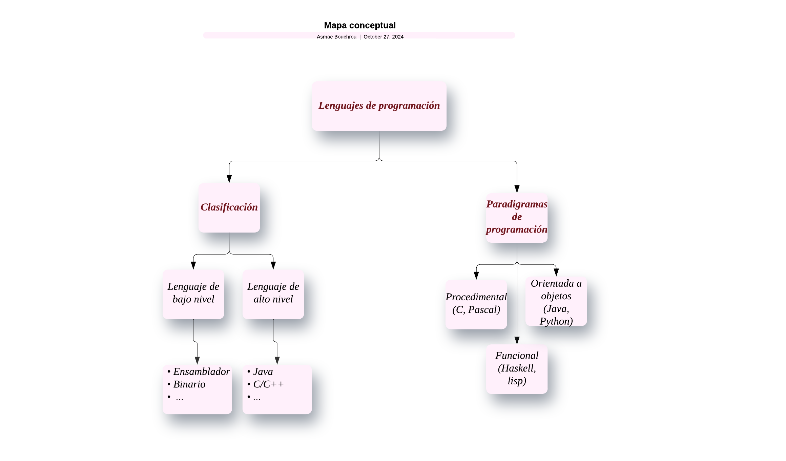

El software es el conjunto de programas y aplicaciones que permiten al hardware realizar tareas específicas. Funciona como instrucciones digitales que controlan el funcionamiento de los dispositivos electrónicos.
El software se clasifica en:
Software de sistema: Incluye sistemas operativos y controladores.
Software de aplicación: Realiza tareas específicas como editores de texto y navegadores.
Software de programación: Herramientas para programadores, como IDEs y compiladores.
Software malicioso (Malware): Programas dañinos como virus y troyanos.
El software y el hardware trabajan juntos para permitir el funcionamiento de los dispositivos.
Desde el sistema operativo (SO): El SO gestiona el hardware y es intermediario entre este y las aplicaciones.
Desde las aplicaciones: Las aplicaciones usan los recursos del sistema mediante el SO.
El desarrollo de software es el proceso de creación y mantenimiento de aplicaciones, organizado en varias fases guiadas por un modelo de ciclo de vida.
Modelos de ciclo de vida del software
Un modelo de ciclo de vida define los pasos necesarios en el desarrollo del software, desde la planificación hasta el mantenimiento.
Modelo en Cascada: Lineal, útil en proyectos con requisitos estables.
Modelo Iterativo: Repite fases en ciclos para mejorar el producto.
Modelo Ágil: Fomenta colaboración y flexibilidad, con entregas rápidas de versiones funcionales.
Las herramientas CASE (Computer-Aided Software Engineering) se dividen en:
